Die BeteiligtenWer was gemacht hat
Das Spiel ist Teamarbeit zwischen zwei Lehrkräften und einer KI. Die Rollen waren von Anfang an klar verteilt: Die Menschen haben entschieden, was das Spiel sein soll, und es immer wieder durchgespielt. Claude Code hat gebaut, getestet und Vorschläge gemacht. Die Rollen stehen so auch in den Credits im Spiel.
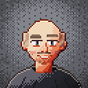
Johannes Richter
- unterrichtet die DSD-Klasse, für die das Spiel gedacht ist
- hat die Konzeptzeichnungen für den Bossgegner Drachenrichter angefertigt
- hat sich mit Blick auf die Lerngruppe für die 3D-Grafik entschieden
- wollte den Fortschritt der Klasse regelmäßig sehen; daraus wurde das Lehrerzimmer, und er fragte nach einer Live-Ansicht
- hat den Start mit der Klasse geplant
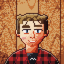
Alexander Batzke
- hat alle Aufträge an Claude Code formuliert, rund 100 Nachrichten in zwölf Tagen
- hat die Welten entworfen: Bücherwald, Eiswelt, Turm der Tausend Treppen, Feste vor dem Vulkan, Intro und Finale
- hat jede Fassung selbst gespielt und Notizen geschrieben
- hat die Musik ausgesucht, die echte Schulglocke als Klang für Aurelia beigesteuert und Reader, Modellsatz und Hör-Beispiele besorgt
- hat Repository, Freigabe, IT-Fragen und Veröffentlichung organisiert
Claude Code
- hat den gesamten Code geschrieben, im Browser mit Three.js, ohne Spiel-Engine
- hat alle 3D-Figuren aus Grundkörpern gebaut und alle Pixel-Porträts gezeichnet, beides per Programm
- hat alle Aufgaben, Lese- und Hörtexte selbst geschrieben, nach dem Muster der Prüfung
- hat jede Änderung automatisch im Browser getestet, mit Bildschirmfotos
- hat Doku, Lehrerzimmer, Sprungcodes und die Veröffentlichung gebaut
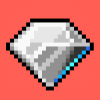
Beau Buckley
- frei verwendbare MIDI-Stücke für Rollenspiele
- Claude Code hat sie mit einem freien Klangsatz in MP3 umgewandelt und so gekürzt, dass sie ohne Lücke in Schleife laufen
5. NovemberWomit es losging
Am Anfang stand ein leeres GitHub-Repository und ein Satz, der das ganze Projekt beschreibt:
Es soll ein Spiel werden, das mit Gamification auf das Deutsche Sprachdiplom vorbereitet. Es ist für Schülerinnen und Schüler, die Deutsch als Fremdsprache erlernen. Im Rahmen eines Adventure-Rollenspiels sollen sie alle notwendigen sprachlichen und inhaltlichen Kompetenzen lernen und erweitern. Das Setting ist eine Heldenreise im Fantasy Sujet.
Danach kam das Designdokument „Die Chroniken von Eldoria“: vier Reiche für die vier Prüfungsteile, ein Bösewicht namens Morgrath, der das Sprachsiegel zerbrochen hat, und eine finale Festung. Die Anweisung dazu war bewusst zurückhaltend: erst lesen, dann einen Plan vorschlagen, noch nichts bauen. Claude Code schlug einen Aufbau vor, stellte Fragen zu Geräten, Spielständen und KI-Feedback, und am selben Abend stand ein erster spielbarer Prototyp: das Dorf der Ankömmlinge und die erste Quest in Lythara, in einfacher Platzhaltergrafik.
Es funktioniert. Es macht jetzt schon mehr Spaß, als einfach nur Arbeitsblätter auszufüllen. Wir haben noch einen weiten Weg vor uns, aber ich spüre, dass das toll wird :-)
Schon die erste Rückmeldung zeigte, wie die Zusammenarbeit laufen würde. Im Heldenbogen gibt man Herkunft und Traumberuf an, die nächste Aufgabe fragte aber nach anderen Angaben:
Also ich habe „Pilotin“ geschrieben, in der nächsten Aufgabe stand aber dann „Krankenpfleger“ kann man das durch eine Variable direkt aufgreifen?
Zwanzig Minuten später griffen alle Folgeaufgaben die eigenen Angaben aus dem Heldenbogen auf. Dieses Muster zog sich durch das ganze Projekt: ausprobieren, eine konkrete Beobachtung schildern, Claude Code ändert es, wieder ausprobieren.
6. und 7. NovemberDrei Grafikstile, eine Entscheidung
Der Prototyp erinnerte an einen Heimcomputer der Achtzigerjahre. Für den nächsten Schritt sollten zwei Richtungen nebeneinander entstehen, damit man vergleichen kann:
Ich möchte gerne, eine Version in 16 Bit Grafik, die an SNES erinnert. In etwa wie „Zelda: A Link to the Past.“ Die Figuren sollen, wenn sie angesprochen werden, größere und detaillierte Pixelfiguren bekommen. […] Außerdem möchte ich eine zweite Version erstellen in 3D Grafik. Man schaut dem Helden über die Schulter wie in „Zelda: Ocarina of Time“. […] Ich würde gerne beide Versionen vergleichen, um dann zu entscheiden, mit welcher Idee wir weitermachen.
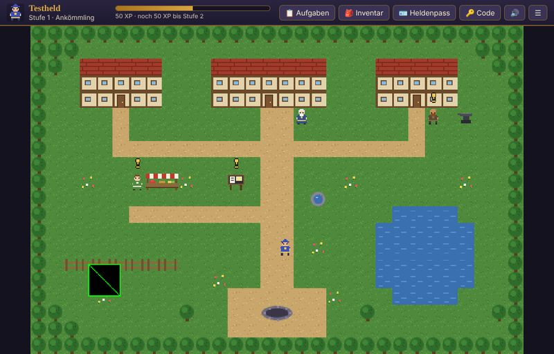
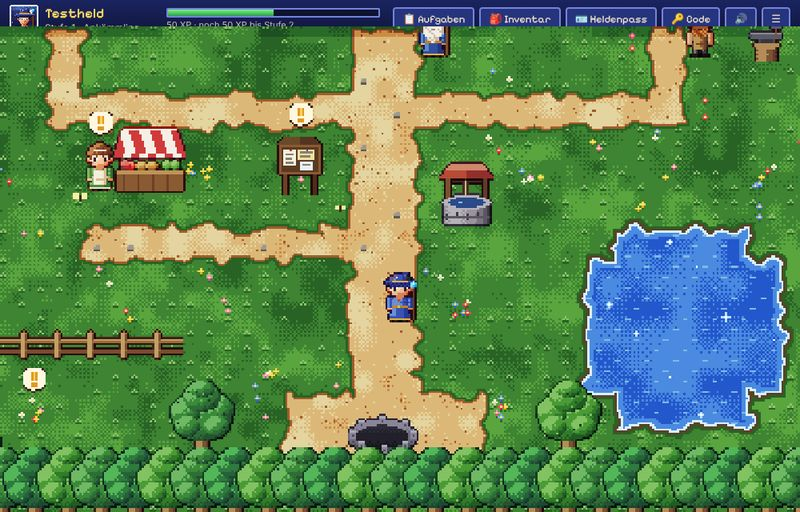
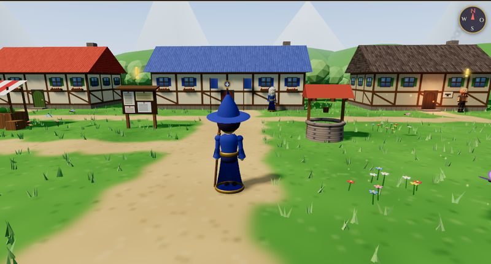
Entschieden hat die Lerngruppe:
Ich finde selbst die 16-Bit Version schöner, aber vonseiten des Klassenlehrers mit Blick auf die Lerngruppe wurde sich für die 3D Version entschieden. Ist wahrscheinlich auch noch beeindruckender und motivierender für die Schüler. […] Um noch etwas aus der 16-Bit Version mitzunehmen würde ich vorschlagen, dass wir die Pixelgesichter in den Dialogen übernehmen.
So entstand die Mischung, die das Spiel heute prägt: eine 3D-Welt mit runden Polygonfiguren, Licht und Schatten, und in jedem Gespräch ein detailliertes Pixel-Porträt. Im selben Schritt kamen eine Touch-Steuerung für Handy und Tablet dazu und ein Spielstand als Datei, statt eines langen Codes zum Abschreiben. Hilfreich war dabei ein früheres 3D-Projekt von Herrn Batzke: Seine gesammelten Erkenntnisse gab er Claude Code als Lektüre mit.
Der ProzessWie gearbeitet wurde
Gearbeitet wurde meist abends und am Wochenende, in kurzen Runden. Jede Runde folgte demselben Ablauf:
- Idee oder BeobachtungHerr Batzke beschreibt, was er sich wünscht oder was ihm beim Spielen aufgefallen ist.
- KonzeptBei größeren Dingen schlägt Claude Code zuerst ein Konzept vor, oft mit mehreren Varianten.
- EntscheidungHerr Batzke wählt aus, oft nach Rücksprache mit Herrn Richter, und gibt Details vor.
- BauClaude Code programmiert, schreibt Aufgaben und baut die 3D-Welt.
- Automatischer TestEin Skript spielt die neuen Stellen im Browser durch und macht Bildschirmfotos.
- VeröffentlichungDie neue Fassung geht online, der Code wird im Repository gesichert.
- DurchspielenHerr Batzke spielt selbst und schreibt die nächste Beobachtung auf.
Drei Werkzeuge haben diesen Kreislauf deutlich beschleunigt. Alle drei sind auf Wunsch von Herrn Batzke entstanden:
Sag mal, ist es möglich, dass du mir für alle Stages im Spiel Codes erzeugst, damit ich da direkt hinspringen kann? Ich will nicht immer, um was zu überprüfen, alle Aufgaben lösen. Deutsch lernen muss ich nicht mehr, kann ich schon :-)
- Sprungcodes: Mit einem Code springt man an jede Stelle im Spiel, zum Beispiel direkt vor den Drachenrichter. Die Codes stehen nur verschlüsselt im Code, als Prüfsummen.
- DAS NICHTS: eine weiße, endlose Galerie, in der alle Figuren auf Sockeln stehen, damit man jedes neue Modell sofort ansehen kann. Die Idee kam von Herrn Batzke, nach dem „Raum von Geist und Zeit“ aus Dragonball.
- Die Arbeitsregeln im Repository: Eine Datei
CLAUDE.mdhält fest, was immer gilt, etwa „vor neuen Aufgaben zuerst die Prüfungsformate lesen“, „keine Originaltexte aus Prüfungsunterlagen“ und „vor jedem Commit automatisch testen“.
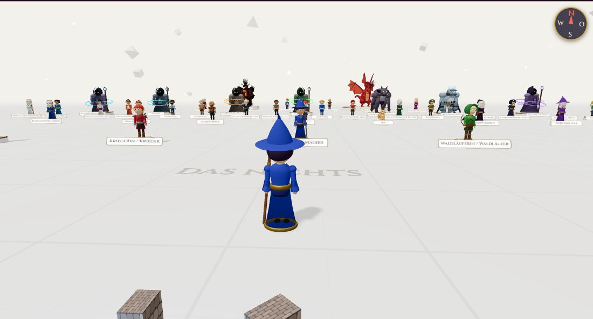
Bei großen Bauteilen lautete der Auftrag oft „Lass dir Zeit“ oder, wie bei Scriptoria: „Ich möchte dich bitten, Scriptoria so weit es geht fertig zu machen. Melde dich nur, wenn Probleme oder größere Fragen auftreten.“ Dann arbeitete Claude Code längere Strecken selbstständig. Kleine Korrekturen kamen dagegen in Minuten, etwa ein Loch an der obersten Treppenstufe, über das die Figur einfach lief.
ChronikMeilensteine
- GrundgerüstDorf der Ankömmlinge, Heldenbogen, erste Quest in Lythara, Platzhaltergrafik
- Musik und zwei neue GrafikstileErste Hintergrundmusik, Fanfaren, Quests lassen sich abbrechen; 16-Bit- und 3D-Fassung zum Vergleich
- 3D wird HauptversionGanzes Spiel in 3D, Handy-Steuerung, Spielstand als Datei, erstes Lehrerzimmer
- Lythara: Teil B des ReadersVier Quests zum Forumsbeitrag (Einleitung, Wiedergabe, Erfahrungen, Meinung, Schluss)
- Sprungcodes, schwebende Inseln, NebenquestsDie Kammern werden zu Inseln über Lythara; das Dorf bekommt eigene Geschichten
- Drachenrichter, DAS NICHTS, AureliaDas Modell nach Herrn Richters Skizzen, die Figurengalerie, die Hörquest „Mimi ist weg!“ und die Hafenstadt Aurelia
- Aurelia fertig, Prüfungsformat als GrundlageFünf Hörquests nach dem Muster des DSD; Abgleich mit Modellsatz, Hör-Beispielen und Handreichung
- ScriptoriaDer Bücherwald mit fünf Lesequests und dem Bibliothekar der Schatten
- Vocantia, Verwandlungen, Turm der Tausend TreppenSprechaufgaben mit Stimmkristall, Reiche verwandeln sich nach dem Sieg, Lythara wird zum Turm
- Finale, Intro, VeröffentlichungNotizen aus dem ersten kompletten Durchspielen; Feste Schattenzahn mit Probeprüfung; Morgrath als Bosskampf in fünf Phasen; Schlusssequenz; Intro; GitHub Pages und QR-Code
- CreditsPixel-Avatare des Teams
- Einsatz in der DSD-KlasseDas Spiel läuft im Unterricht, Rückmeldungen fließen in kleinen Schritten ein
Grundlegende UmbautenLythara: zweimal neu gebaut
Kein Ort hat sich so oft verändert wie Lythara, das Reich des Schreibens. Lythara war der erste Ort im Spiel und damit auch der erste Entwurf. Als das Spiel wuchs, passte er nicht mehr dazu.
Erster Umbau: von den Kammern zu den schwebenden Inseln
Nach der „Halle der Tausend Tore“ kamen ursprünglich die „Kammern der Stimmen“. Beim Durchspielen fiel auf, dass sich beides kaum unterschied:
Die Halle der Tausend Tore und die Kammern der Stimmen sind mir designtechnisch zu ähnlich. Da glaubt man nicht, dass man Fortschritt gemacht hat, wenn man nach dem Brechen des Siegels beim Torwächter wieder im selben Level landet. […] Die Frage ist, wie wir die Kammern neu gestalten können. Ideen?
Claude Code schlug mehrere Richtungen vor. Gewählt wurden schwebende Inseln über einem Wolkenmeer, verbunden durch Brücken, mit Lythara in der Ferne. Damit wurde aus „Kammer“ auch begrifflich „Insel“.
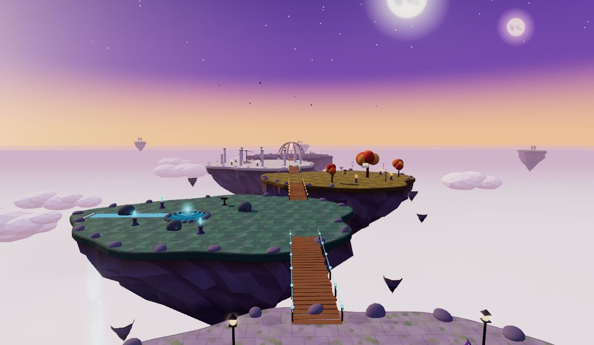
Zweiter Umbau: von der Halle zum Turm
Fünf Tage später wirkte auch die Halle selbst wie ein Prototyp:
Die Halle der Tausend Tore war ein guter Ausgangspunkt, doch mittlerweile hat sich das Spiel so toll entwickelt, dass sie sehr prototypisch wirkt, was sie am Anfang ja auch war. Ich möchte bitte, dass aus der „Halle der Tausend Tore“ ein „Turm der Tausend Treppen“ wird. […] In jedem Raum wird es schöner, heller und etwas eleganter eingerichtet. Als wenn man in einer mittelalterlichen Burg aufsteigt. Keller (Eingang Lyra) → Kammern des Gesindes (Thema) → Waffenkammer der Ritter (Quellen) → Bankettsaal (Interesse) → Gemächer der Burgherren (Leser) → Das Observatorium (Überschrift).
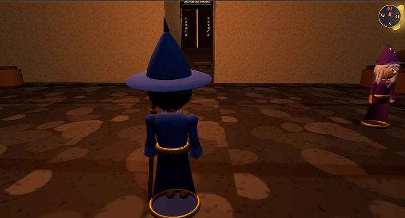
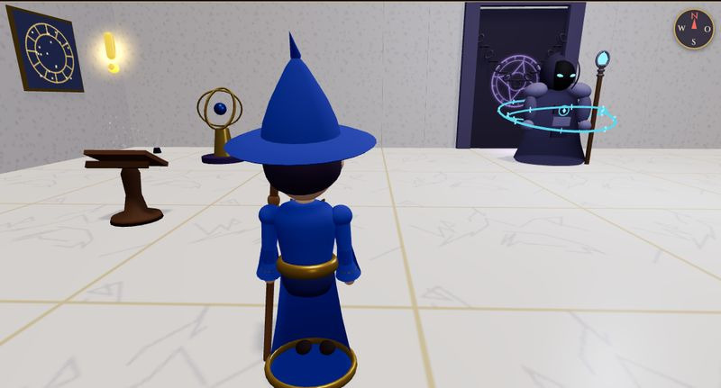
Der Turm hat den Fortschritt im Spiel sichtbar gemacht: Jede gelöste Aufgabe öffnet die Treppe ein Stockwerk höher, und ganz oben öffnet sich der Weg zu den Inseln. Beim ersten Test gab es Feinschliff: Die Gemächer bekamen mehr Ausstattung, die oberste Treppenstufe war ein Loch, und der Keller brauchte mehr Fackeln.
Ein dritter, stiller Umbau betraf die Inhalte. Nachdem am 13. November der offizielle Modellsatz und die Handreichung zur Schriftlichen Kommunikation vorlagen, hat Claude Code alle Lythara-Aufgaben noch einmal mit diesen Unterlagen abgeglichen und überarbeitet.
10. NovemberVom Skizzenblatt zum Drachen
Der einzige Bossgegner, der nicht von Claude Code entworfen wurde, ist der Drachenrichter. Herr Richter hat ihn gezeichnet, und zwar nicht als Bild, sondern als Konstruktionsblatt: wie der Kopf aus Grundformen aufgebaut ist, wie der Kiefer aufklappt, wie das Ohr nach hinten klappt, und dass der Drache sich am Ende vor seinem Bezwinger hinkniet.
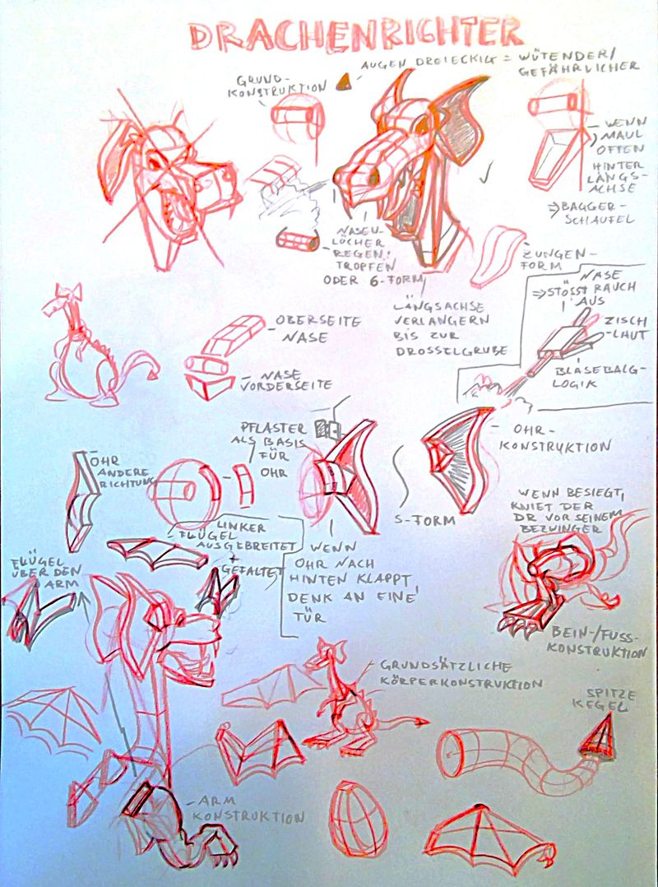
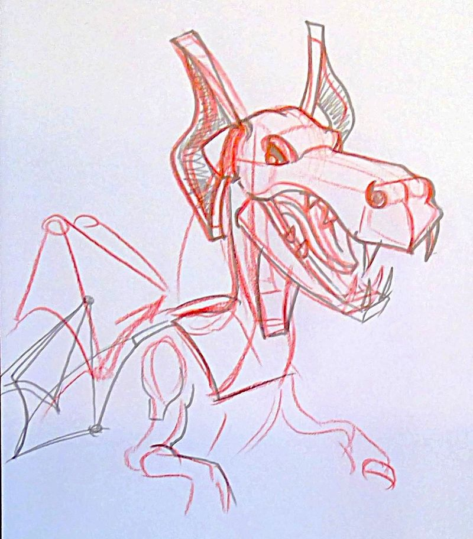
Dies sind Zeichnungen, die ein Kollege für einen Bossgegner namens Drachenrichter angefertigt hat. Jetzt wird es spannend: Bist du unter Zuhilfenahme diverser Skills dazu in der Lage, aus diesen Konzeptzeichnungen ein 3D-Modell für das Spiel zu erstellen? Soll ich ggf. noch eine andere KI hinzuziehen?
Ja, ich traue mir das zu. Ich würde es aber anders angehen, als du vielleicht denkst: Ich baue den Drachenrichter selbst, im Stil des Spiels. […] Ein fremdes Modell würde neben den anderen Figuren wie ein Fremdkörper wirken. […] Grenze: Ein Drache ist komplexer als die bisherigen Figuren. Er wird stilisiert, keine fotorealistische Skulptur.
Das Modell besteht wie alle Figuren aus programmierten Grundkörpern, ohne andere KI und ohne Modellierprogramm. Aus dem Konstruktionsblatt wurden übernommen: der Unterkiefer, der wie eine Baggerschaufel aufklappt, die dreieckigen, wütenden Augen, die tropfenförmigen Nasenlöcher, aus denen alle paar Sekunden Rauch kommt, die Ohren, die wie eine Tür nach hinten klappen, die Fledermausflügel, der Schweif aus Röhrensegmenten mit spitzem Kegel und die kniende Pose nach der Niederlage.
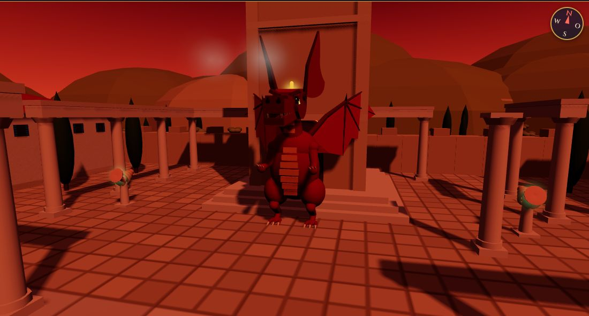
Auch die übrigen Bossgegner gehen auf Vorgaben aus den Prompts zurück: ein Werwolf als Bibliothekar der Schatten, der sich nach dem Sieg in einen freundlichen alten Bibliothekar zurückverwandelt, und ein Eistroll mit gefrorener Krone und schweren Ketten als Schweigekönig. Der Troll verwandelt sich bewusst nicht zurück, sondern zieht sich geschlagen auf den Gipfel zurück, damit sich das Motiv nicht wiederholt.
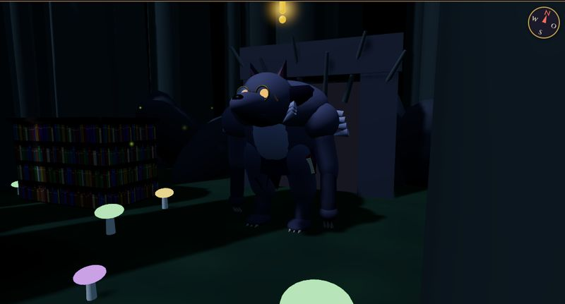
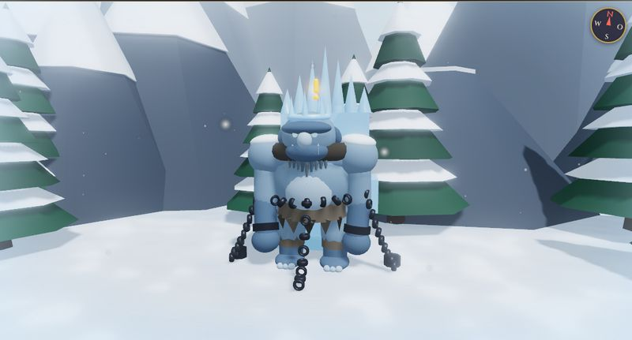
10. bis 14. NovemberReiche, die sich verwandeln
Jedes Reich steht für einen Prüfungsteil, und jedes hat eine eigene Welt bekommen. Die Bildsprache stammt fast immer aus den Prompts:
- Aurelia, Hören: eine Hafenstadt im Stil der Antike am Mittelmeer, mit Leuchtturm, Agora, Werft und Glockenturm.
- Scriptoria, Lesen: „Ich fände es sehr charmant, wenn sich diese in einer Art verwunschenem Wald befände. Ich stelle mir etwas vor wie Lothlorien in Herr der Ringe. Große Bäume, dunkel, leuchtende Pilze, Glühwürmchen. Und in diesem Wald sind dann überall Bücherregale.“
- Vocantia, Sprechen: „Also Vocantia ist ein in Schweigen gehülltes Bergdorf. Schnee, Eiszapfen, gefrorene Seen, hellblauer Himmel. Spürbare Kälte.“
- Lythara, Schreiben: der Turm und die schwebenden Inseln.
Am 14. November kam ein Gedanke dazu, der das Spielgefühl stark verändert hat. Vocantia taut nach dem Sieg über den Schweigekönig auf und blüht. Das sollte für alle Reiche gelten:
Mir gefällt die Idee mit der Verwandlung des Ortes in Vocantia sehr gut. Ich möchte diese auch in anderen Orten einbauen. Dies erzeugt noch mehr das Gefühl einer Heldenreise und dass man mit seinen Taten tatsächlich etwas bewirkt und das Land rettet. […] Aurelia ist am Anfang zu idyllisch. Das passt auch nicht zu dem Drachen, der vor dem Turm dräut. […] Der Himmel rot, die Sonne hat eine halbe Sonnenfinsternis […] Das Meer ist nicht einladend blau, sondern schwarz.
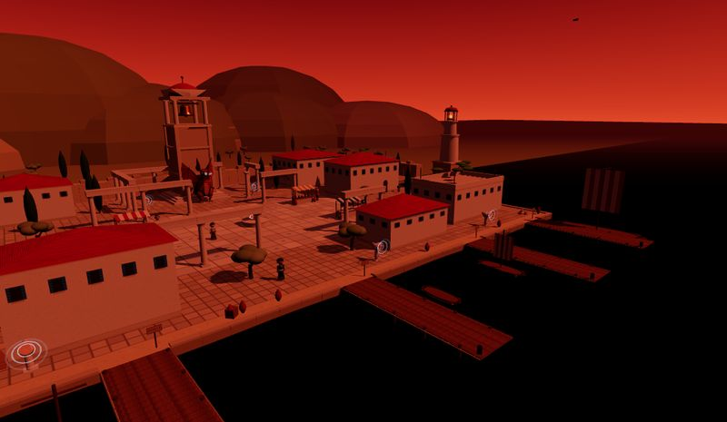
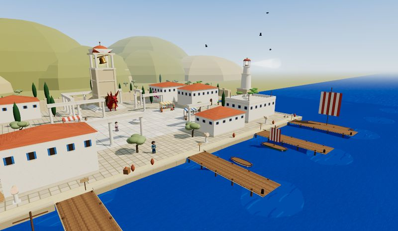
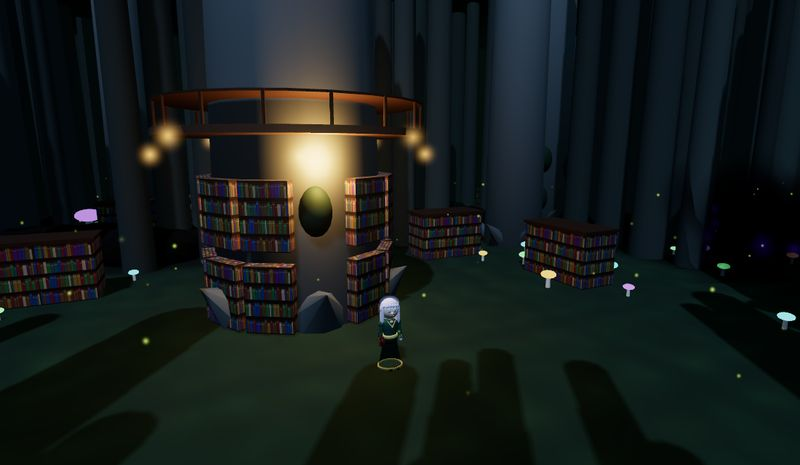
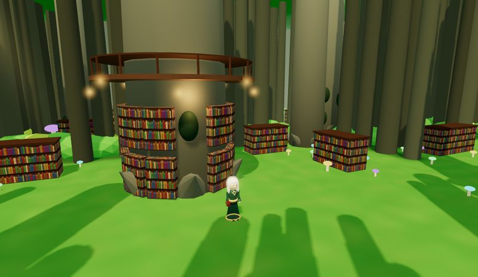
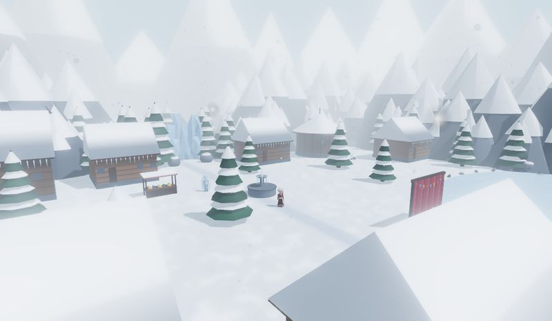
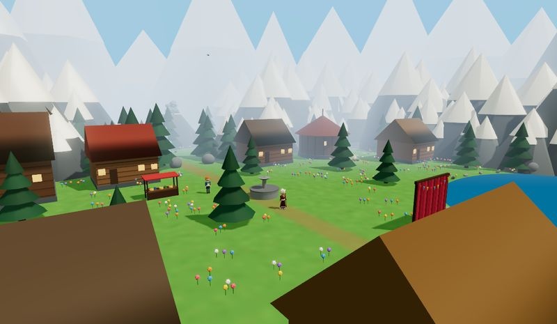
Fachliche GrundlageDie Prüfung als Grundlage
Ein Spiel zur Prüfungsvorbereitung ist nur so gut wie seine Aufgaben. Deshalb hat Herr Batzke nach und nach die offiziellen Unterlagen beschafft: den Reader zur Schriftlichen Kommunikation (47 Handyfotos von Buchseiten), fünf Hör-Beispiele, den Modellsatz und die Handreichung mit den Bewertungsmaßstäben.
Hier ist außerdem noch der Modellsatz für Lesen, Hören, Schreiben. Und die Handreichung mit Hinweisen und Maßstäben zur Aufgabenbewertung. Diese Dateien kommen von der DSD-Seite und gelten als Grundlage. Bitte auch gründlich durcharbeiten und in den Workflow mit aufnehmen.
Claude Code hat daraus eine Arbeitsgrundlage geschrieben, die seitdem vor jeder neuen Aufgabe gelesen wird: die Aufgabenformate (A/B/C, richtig/falsch, Zuordnen mit übrig bleibenden Antworten, Lückentext), wie Lösungen im Text umschrieben werden, wie Ablenker mit Lockwörtern arbeiten, wie oft man welchen Hörtext hört, und die Kriterien der Handreichung für das Schreib-Feedback. Herr Batzke merkte den Unterschied sofort:
Ich finde, dass die Handlungsanweisungen die Erstellung deiner Aufgaben nochmal bereichert haben. Alles wirkt kreativer und zugleich effektiver.
| Format | Anzahl |
|---|---|
| Auswahl (A/B/C) | 206 |
| Lückentext | 33 |
| Zuordnen | 31 |
| Richtig/Falsch | 29 |
| Sätze ordnen | 22 |
| Sprechaufgaben | 16 |
| Freie Texte | 10 |
| Aufgabenblöcke (mehrere Fragen zu einem Text) | 7 |
| Zusammen | 354 |
Ganz am Ende steht in der Feste Schattenzahn eine vollständige Probeprüfung: Hörverstehen und Leseverstehen mit je 24 Aufgaben in fünf Teilen, im Prüfungsmodus mit nur einem Versuch und ohne Rückmeldung bis zur Auswertung, dazu ein Forumsbeitrag und eine mündliche Prüfung mit Gespräch und Präsentation.
Für den UnterrichtWerkzeuge für Lehrkräfte
Schon am dritten Tag ging es nicht mehr nur um das Spiel, sondern auch um den Unterricht drumherum:
Es wäre gut, wenn die Speicherstände der Schüler einsehbar und auslesbar wären. Also um als Lehrer den Fortschritt nachzuverfolgen. […] Im Dashboard soll man die Speicherstände anklicken und die Ergebnisse am besten sogar mit visualisierten Statistiken anschauen können.
Daraus wurde das Lehrerzimmer: Die Schülerinnen und Schüler speichern ihren Spielstand als Datei und laden ihn in einen Abgabeordner, zum Beispiel in OneDrive. Die Lehrkraft liest den ganzen Ordner auf einmal ein und sieht eine Klassenübersicht, die Stolpersteine der Klasse, die Fertigkeiten je Prüfungsteil und für jede Person eine eigene Akte mit allen geschriebenen Texten. Die Dateien werden nur im Browser ausgewertet und nirgendwohin hochgeladen.
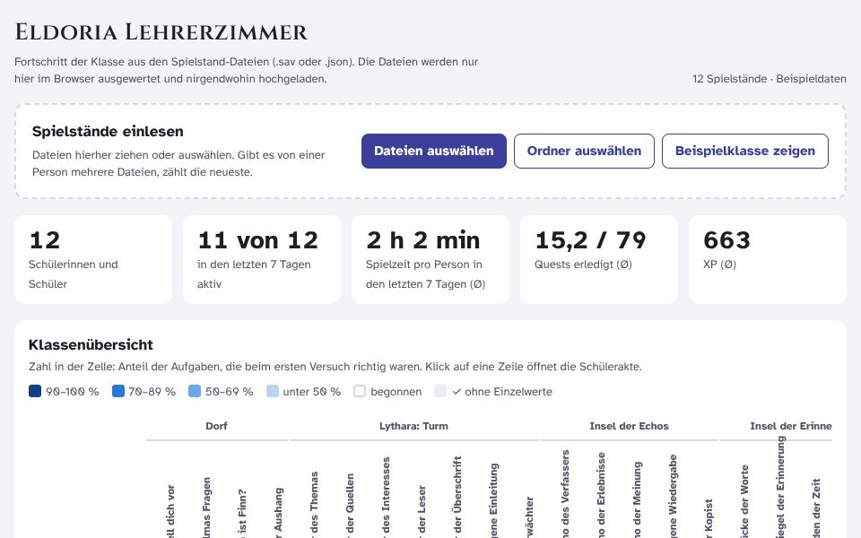
- Lehrercodes: Für Teamarbeit oder mündliche Beiträge im Unterricht verteilt die Lehrkraft Codes, die im Spiel Erfahrungspunkte bringen.
- Das Sprechsiegel: Vor dem letzten Kampf in Vocantia braucht man einen Code der Lehrkraft für eine echte mündliche Leistung im Unterricht. So spricht jede Person mindestens einmal vor echten Menschen.
- Der Stimmkristall: Mit Mikrofon misst er, wie lange jemand spricht, und erlaubt eine eigene Aufnahme zum Anhören. Ohne Mikrofon gibt es eine Sprechuhr. Partnerübungen bringen Abwechslung.
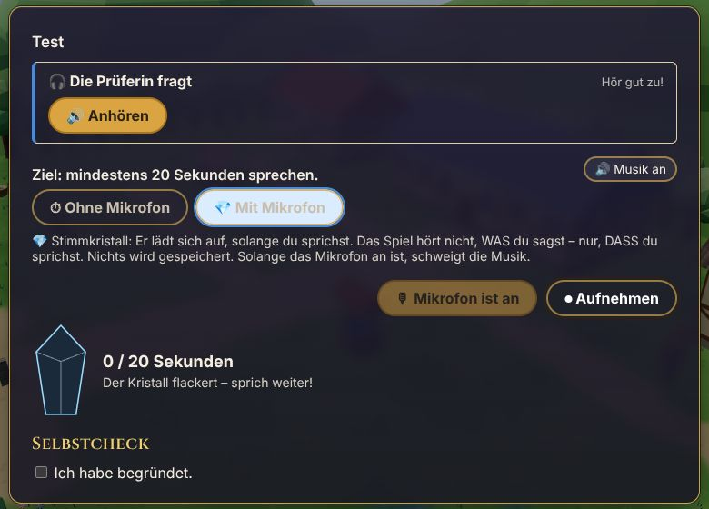
15. NovemberFinale und Intro
Für das Ende gab das Designdokument nur einen Rahmen vor. Den Rest beschrieb Herr Batzke in einem einzigen, langen Prompt:
Jetzt fehlt nur noch die finale Kampagne. The belly of the beast. Wie es in der Heldenreise heißt. […] Man startet draußen vor der Feste Schattenzahn. Ein düsteres, bedrohliches Schloss vor einem aktiven Vulkan. Fledermäuse, Ratten, Spinnenweben, Goblins. […] Mit jedem Dungeon geht es tiefer runter. Beleuchtet von blubbernden Lavaströmen und Fackeln. […] Beim finalen Sieg über Morgrath fällt er in die Lava und das Reich ist gerettet. Gib dir bei der Modellierung von Morgrath nochmal richtig Mühe. Ich denke z.B. an Sauron im Herr der Ringe. Think big!
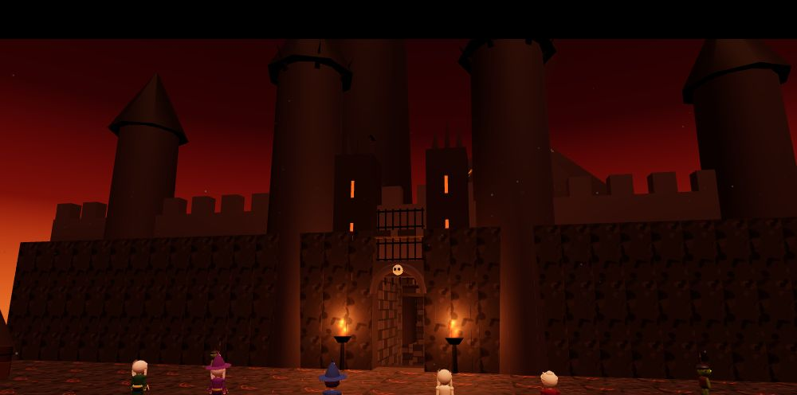
Danach folgten drei Runden Feinschliff, jede nach dem Durchspielen. Zuerst wurden alle Begegnungen mit Morgrath zu einem Bosskampf in fünf Phasen, mit Bossmusik und einem Lebensbalken, der nach jeder bestandenen Prüfung fällt. Dann kam die Schlusssequenz:
Die ganze Festung wackelt und bebt nach dem Fall Morgraths. Man läuft zurück aus der Feste Schattenzahn und trifft draußen auf die Mentoren, die dann ihren Satz sagen. Dann zerfällt die Festung zu Staub und der Vulkan im Hintergrund erlischt. Der Himmel wird blau und die Goblins setzen sich gechillt auf den Boden. […] Epischer Schluss!
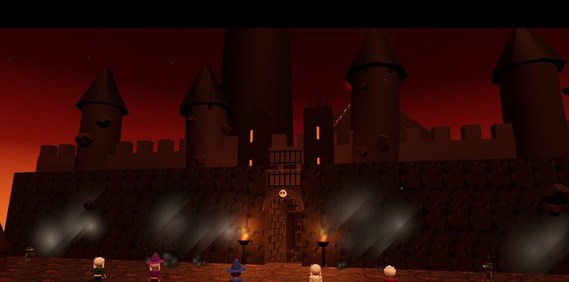
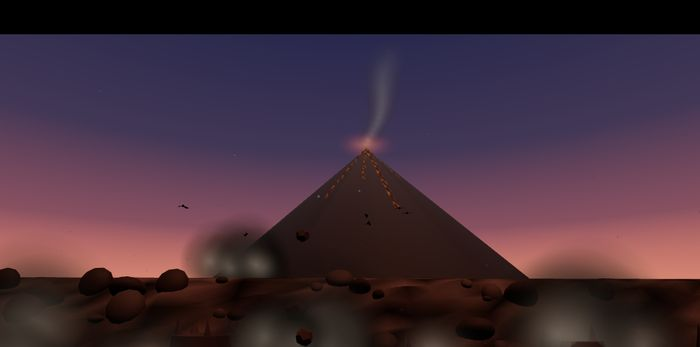
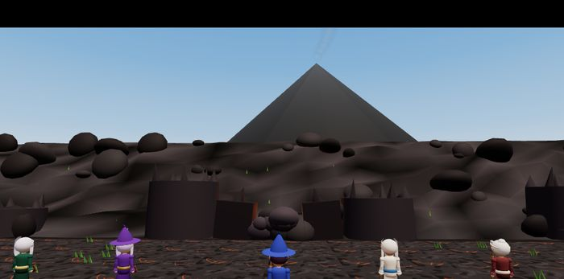
Für das Grollen beim Beben hat Claude Code keinen fertigen Klang verwendet: Der Browser erzeugt es während des Spiels selbst, aus gefiltertem Rauschen. Und weil ein epischer Schluss einen ebenso epischen Anfang verdient, bekam der Prolog am selben Abend Bilder: einen Überflug durch die vier Reiche, das Sprachsiegel in der hellen Leere, Morgrath, der es zerschlägt, und Figuren, die sich nicht mehr verstehen.
So ein episches Ende verdient auch einen ebenso dramatischen Anfang. Kurzum, wir brauchen ein Intro. […] Wir haben ja jetzt schon alle Modelle, es muss nichts neu erzeugt werden.
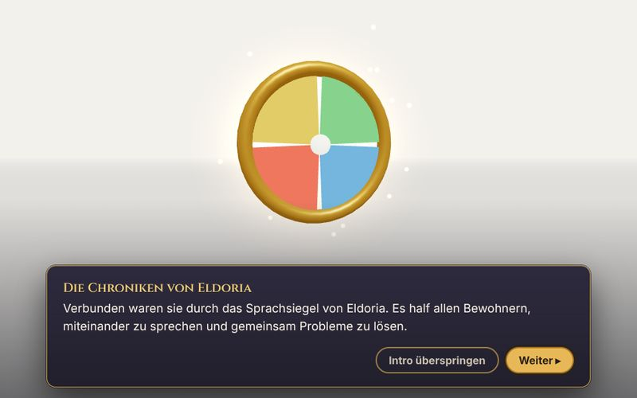
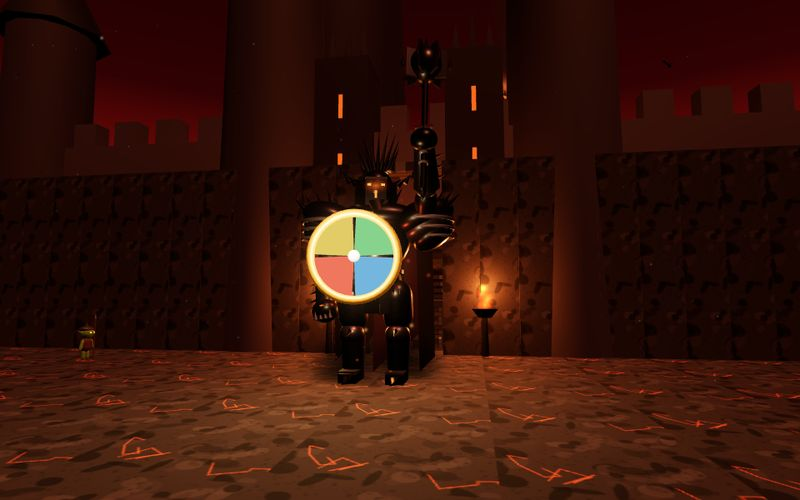
15. NovemberDer Weg in die Klasse
Während der Entwicklung lief das Spiel als private Seite bei Claude. Für den Unterricht brauchte es eine feste Adresse. SharePoint und OneDrive schieden aus, weil sie hochgeladene Webseiten aus Sicherheitsgründen nicht ausführen. Gewählt wurde GitHub Pages: Dafür wurde das Repository öffentlich, und jede neue Fassung ist seitdem ein bis zwei Minuten nach dem Speichern online.
- Datenschutz: Das Spiel hat keinen eigenen Server. Spielstände bleiben im Browser des Geräts. Seit dem 15. November lädt das Spiel auch keine Schriften mehr von fremden Servern.
- Für die IT: Freigegeben werden muss nur die Adresse
lxbatz.github.io. - Für Handy und Tablet: eine Karte mit QR-Code zum Ausdrucken oder für den Beamer.
Spielen: lxbatz.github.io/dsd_spiel · Quellcode: github.com/lxbatz/dsd_spiel
Ehrlich bilanziertGrenzen und Abstriche
Nicht alles, was man sich wünschen würde, war möglich. Manches lag an der Technik, manches an Datenschutz und Urheberrecht, manches an der Zeit.
Keine KI-Bewertung der Texte
Ein Feedback der KI auf frei geschriebene Texte hätte eine Anmeldung bei einem KI-Dienst für jede Person gebraucht. Das kam für eine Schulklasse nicht infrage.
Checklisten nach der Handreichung, eine Wortzählung und die Bewertung durch die Lehrkraft im Lehrerzimmer.
Robotische Stimmen
Die Hörtexte liest die Sprachausgabe des Browsers vor. Das klingt hörbar künstlich. Echte Prüfungsaudios dürfen aus Urheberrechtsgründen nicht ins Spiel.
Eigene Hörtexte nach dem Prüfungsmuster; aufgenommene Stimmen können später eingebaut werden.
Der Kristall versteht nichts
Der Stimmkristall misst nur, ob und wie lange jemand spricht, nicht was. In der Claude-Ansicht ist das Mikrofon gesperrt.
Selbstcheck, Partnercheck, eigene Aufnahme zum Anhören und das Sprechsiegel der Lehrkraft; mit Mikrofon über GitHub Pages.
Kein Live-Dashboard
Herr Richter wünschte sich, live zu sehen, wer gerade woran arbeitet. Das ist technisch machbar, braucht aber eine Anmeldung mit dem Schulkonto und eine Freigabe der Schul-IT. Konzept und Anfrage an die IT liegen vor, gebaut ist es noch nicht.
Spielstände als Datei in einen Abgabeordner, Auswertung im Lehrerzimmer.
Ein Spielstand pro Gerät
Der Fortschritt liegt im Browser. Wer das Gerät wechselt oder an einem geteilten Schulrechner spielt, muss ihn mitnehmen.
Speichern als Datei und Laden auf dem anderen Gerät.
Stilisierte Grafik
Alle Figuren sind aus Grundkörpern programmiert, ohne Modellierprogramm und ohne Animationsaufnahmen. Der Drache ist eine Deutung der Skizzen, keine exakte Umsetzung. Bossanimationen sind teils von Meldungen verdeckt.
Ein einheitlicher Stil, kleine Dateien, schnelles Laden auch auf Schulgeräten.
Leistung auf schwachen Geräten
3D im Browser fordert ältere Rechner. Beim Intro werden die Reiche kurz gebaut, das kann einen Moment stocken.
Drei Grafikstufen, die sich bei Bedarf selbst herunterschalten.
Tests ohne Augen und Ohren
Claude Code testet in einem Browser ohne Grafikkarte und ohne Lautsprecher. Ton, echte Geräte und das Spielgefühl kann nur ein Mensch prüfen.
Jede größere Stufe wurde von Herrn Batzke durchgespielt; seine Notizen flossen direkt ein.
Unsichere Prüfungsdetails
Die Unterlagen widersprechen sich teilweise, der Reader lag nur als Handyfotos vor, und offizielle Bestehensgrenzen standen nicht darin.
Die Bestehensgrenze im Spiel liegt bei 50 %; die Lehrkraft sieht alle Punkte im Detail.
Platzhalter-Musik
Die Musik besteht aus freien MIDI-Stücken. Sie klingen nach klassischem Rollenspiel, aber nicht nach Orchester. Geräusche der Orte fehlen noch weitgehend.
Die Dateien lassen sich jederzeit austauschen; die Schulglocke von Aurelia ist schon eine echte Aufnahme.
Kein echter Kopierschutz
Rechtsklick und Entwicklerwerkzeuge sind im Spiel gesperrt. Der Quellcode ist aber öffentlich auf GitHub.
Die Sprungcodes stehen nur als Prüfsummen im Code; die Klartext-Liste hat nur die Lehrkraft.
Begrenzte Rechenzeit
Einmal hat das Nutzungslimit die Arbeit mitten in einem Bauschritt unterbrochen. Danach ging es an derselben Stelle weiter.
Große Aufgaben in kleinere Schritte teilen und jeden Stand sofort sichern.
Zum SchlussWas wir mitnehmen
- Die Richtung muss von Menschen kommen. Die stärksten Momente im Spiel, die Verwandlungen, der Turm, das Finale, standen zuerst als Bild im Kopf einer Lehrkraft. Claude Code hat sie umgesetzt und Details ergänzt.
- Konkrete Beobachtungen wirken am besten. „Die letzte Stufe der Treppe ist ein Loch“ war in Minuten behoben. Je genauer eine Rückmeldung, desto schneller und besser die Änderung.
- Erst ein Konzept, dann bauen. Bei großen Teilen hat es sich bewährt, zuerst Vorschläge einzuholen und zu entscheiden. So entstanden die Inseln, Aurelia und Vocantia.
- Werkzeuge für die Entwicklung lohnen sich. Sprungcodes, DAS NICHTS und die Arbeitsregeln im Repository haben jede spätere Runde schneller gemacht.
- Fachliche Unterlagen früh einbeziehen. Seit Modellsatz und Handreichung als Arbeitsgrundlage vorliegen, sind die Aufgaben spürbar näher an der Prüfung.
- Selbst spielen ist nicht zu ersetzen. Automatische Tests finden Fehler. Ob etwas Spaß macht, verständlich ist und gut klingt, merkt nur ein Mensch.
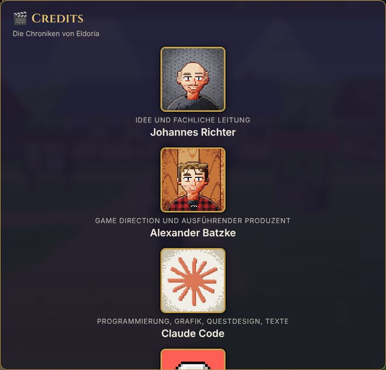